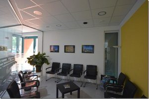

Die Praxis
Seit Januar 2015 steht Ihnen unsere moderne Praxis mit Empfangsbereich, Warteraum, Sprechzimmern, zwei Endoskopieräumen, Aufwachraum, einem Ultraschallraum und einem Labor zur Verfügung.
Wir führen endoskopische Untersuchungen mit HD-Video-Endoskopen sowie Ultraschall mit Hochleistungs-Sonographiegeräten durch. Die Sedierung erfolgt nach den Leitlinien der DGVS. Eine geschulte Mitarbeiterin überwacht den Patienten/die Patientin dabei durchgehend.
Wir arbeiten mit dem Qualitätsmanagementsystem „QEP“ des bng (Berufsverband niedergelassener Gastroenterologen).
Desinfektion und Hygiene
Unsere Endoskop-Aufbereitung erfolgt gemäß den Richtlinien des Robert-Koch-Instituts – mit mechanischer und chemischer Reinigung, Dichtigkeitstest, Spülgängen, Enzymreinigung und Trocknung.
Regelmäßige mikrobiologische Prüfungen durch ein staatlich autorisiertes Hygiene-Institut bestätigen die Keimfreiheit unserer Geräte. Das aktuelle Zertifikat hängt in der Praxis aus.